Cổng thông tin chính thức của Đoàn Thanh niên - Hội Sinh viên khoa Điện - Điện tử
https://deeyu-hcmut.github.io
Phiên bản web 1.0.0 · Tháng 10/2026 Ảnh minh hoạ chụp từ bản demo với dữ liệu hư cấu.
Mục lục
Đăng nhập và vai trò
Quản lý sự kiện (Super Admin, Ban HC-TV, Ban TT-SK)
Điểm danh bằng QR (mọi vai trò cán bộ)
Danh sách đăng ký, xuất Excel, email tự động (Super Admin, Ban HC-TV, Ban TT-SK)
Tin tức (Super Admin, Ban TT-SK)
Tra cứu hoạt động của sinh viên (mọi vai trò cán bộ)
BCH, Đội CTV và danh sách sinh viên (Super Admin, Ban QLNS-CTSV)
Phân quyền tài khoản (Super Admin)
Lưu ý bảo mật và hạn mức miễn phí
Xử lý sự cố thường gặp
1. Đăng nhập và vai trò
Mở deeyu-hcmut.github.io, bấm biểu tượng tài khoản ở góc trên phải → Đăng nhập với Google.
Chọn tài khoản @hcmut.edu.vn. Tài khoản Gmail cá nhân bị từ chối, kể cả khi bạn là cán bộ.
Nếu tài khoản đã được Super Admin cấp quyền, thanh menu hiện thêm Quản trị & Tự động hóa và nút Quét QR Điểm danh. Menu tài khoản hiển thị tên vai trò của bạn.
Chức năng
Super Admin
Ban HC-TV
Ban TT-SK
Ban QLNS-CTSV
Quét QR điểm danh, tra cứu hoạt động SV
✔
✔
✔
✔
Tạo / sửa / xoá sự kiện
✔
✔
✔
–
Danh sách đăng ký, xuất Excel, nhật ký email
✔
✔
✔
–
Đăng / sửa / xoá tin tức
✔
–
✔
–
BCH & Đội CTV, danh sách sinh viên
✔
–
–
✔
Phân quyền tài khoản
✔
–
–
–
Cán bộ cũng là sinh viên: muốn tự đăng ký sự kiện, bạn cần liên kết hồ sơ sinh viên giống mọi sinh viên khác (menu tài khoản → Hồ sơ sinh viên). Riêng Super Admin không có hồ sơ sinh viên.
2. Quản lý sự kiện
Super Admin · Ban HC-TV · Ban TT-SK
Tạo sự kiện mới
Vào mục Sự kiện & Đăng ký → bấm Tạo Sự kiện mới.
Điền các ô có dấu * đỏ: tên, loại sự kiện, ngày diễn ra, số lượng tối đa, địa điểm, mô tả. Điền thêm hạn chót đăng ký và giờ bắt đầu / kết thúc.
Ảnh bìa (không bắt buộc): bấm chọn ảnh từ máy, ảnh được thu nhỏ tự động. Không chọn ảnh thì sự kiện hiển thị logo Đoàn - Hội.
Bấm Đăng sự kiện. Sự kiện mở đăng ký sẽ tự tạo một thông báo trên chuông thông báo.
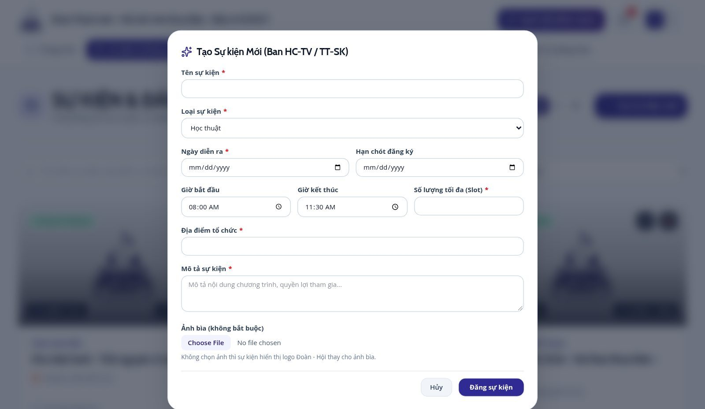
Form tạo sự kiện
Sửa, đổi trạng thái, xoá
Trên thẻ sự kiện có nút bút (sửa) và thùng rác (xoá).
Khi sửa, chọn trạng thái: Đang mở đăng ký, Sắp diễn ra, Đã đóng đăng ký, Đã kết thúc. Sự kiện đủ chỗ sẽ tự chuyển sang đóng đăng ký.
Không giảm được số lượng tối đa xuống dưới số người đã đăng ký.
Xoá sự kiện là vĩnh viễn: mọi vé, thông tin liên hệ và lịch sử điểm danh của sự kiện bị xoá theo. Hãy xuất Excel danh sách đăng ký trước khi xoá.
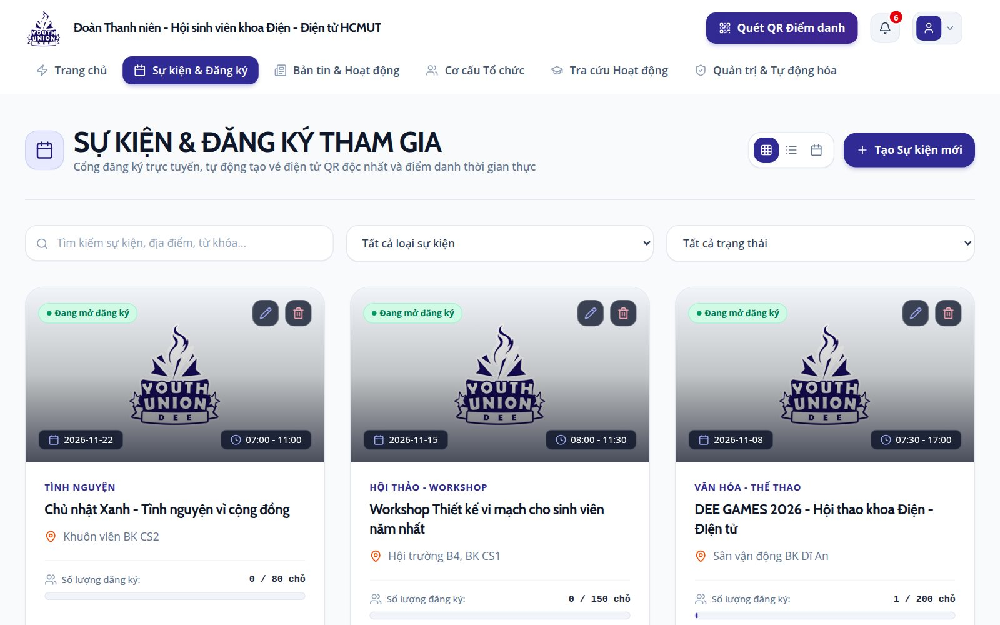
Trang Sự kiện với quyền cán bộ: nút Tạo sự kiện mới, nút sửa / xoá trên từng thẻ
3. Điểm danh bằng QR
Mọi vai trò cán bộ
Bấm Quét QR Điểm danh (máy tính: góc trên; điện thoại: nút Điểm danh ở giữa thanh dưới).
Chọn sự kiện đang tổ chức ở ô trên cùng.
Bấm Bật camera quét QR và đưa vé QR của sinh viên vào khung. Trên điện thoại có nút đổi camera trước / sau.
Không quét được? Nhập mã vé (ví dụ EVT-84525) hoặc MSSV vào ô nhập tay → Check-in.
Màn hình báo Điểm danh thành công kèm tên, MSSV. Vé đã điểm danh trước đó sẽ hiện cảnh báo kèm giờ điểm danh cũ. Sinh viên nhận email xác nhận trong vài phút.
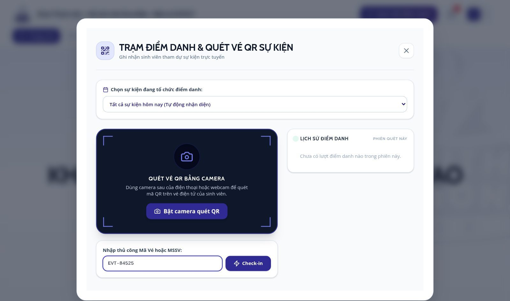
Trạm điểm danh: chọn sự kiện, bật camera hoặc nhập mã vé
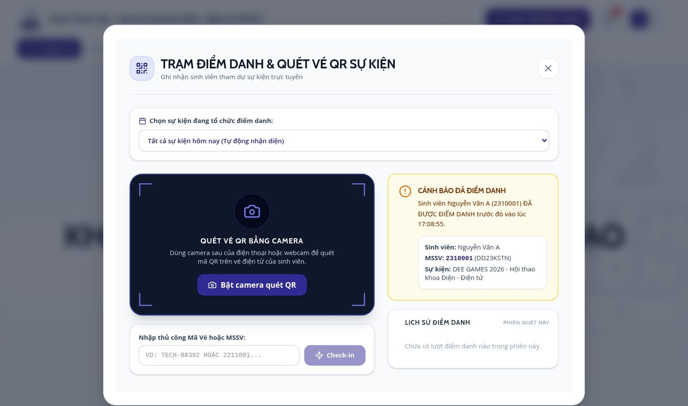
Kết quả điểm danh thành công và lịch sử điểm danh của phiên
Dùng trình duyệt Chrome / Safari và cho phép truy cập camera khi được hỏi. Nếu camera lỗi, bấm Thử bật camera lại hoặc nhập mã tay.
4. Danh sách đăng ký, xuất Excel, email tự động
Super Admin · Ban HC-TV · Ban TT-SK
Danh sách đăng ký
Vào Quản trị & Tự động hóa → tab Đăng ký sự kiện. Mặc định hiển thị sự kiện mới nhất; chọn sự kiện khác ở ô chọn.
Tìm theo tên, MSSV, mã vé, email ở ô tìm kiếm rồi bấm Lọc.
Bấm Xuất file Excel (.xlsx) để tải danh sách đang hiển thị (gồm email, SĐT, trạng thái điểm danh).
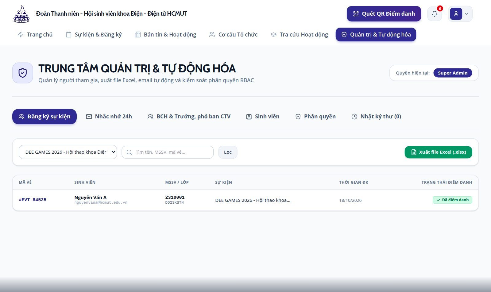
Tab Đăng ký sự kiện
Chọn Tất cả sự kiện sẽ tải toàn bộ vé của mọi sự kiện, tốn nhiều lượt đọc của gói miễn phí. Chỉ dùng khi thật cần xuất tổng hợp.
Email tự động
Hệ thống tự gửi bằng Gmail của Đoàn - Hội, khoảng 5 phút một lần, không cần thao tác:
Xác nhận đăng ký (kèm mã QR) ngay sau khi sinh viên đăng ký;
Nhắc nhở 24h trước giờ bắt đầu sự kiện (gửi một lần, đổi giờ sự kiện thì nhắc lại);
Xác nhận điểm danh sau khi quét vé.
Tab Nhắc nhở 24h cho xem trước giao diện từng loại email. Tab Nhật ký thư liệt kê email: Đang chờ (chờ lượt gửi kế tiếp), Đã gửi, Lỗi (địa chỉ sai, không gửi lại). Bấm Làm mới để cập nhật.
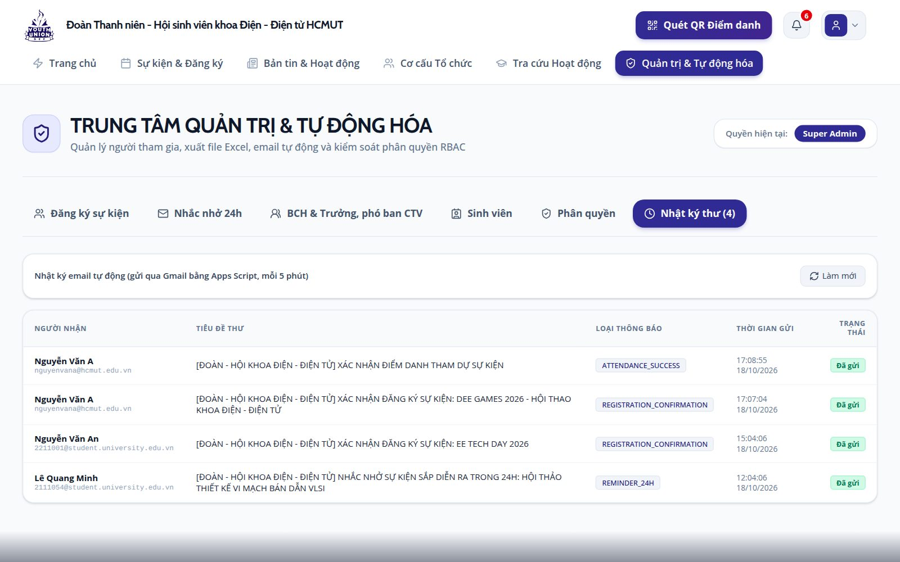
Tab Nhật ký thư
Gmail giới hạn số email mỗi ngày (khoảng 100 với Gmail thường, khoảng 1.500 với tài khoản Workspace). Hết hạn mức thì phần còn lại tự gửi vào hôm sau.
5. Tin tức
Super Admin · Ban TT-SK
Vào Bản tin & Hoạt động → bấm Đăng tin mới.
Điền tiêu đề, chuyên mục, tóm tắt ngắn, nội dung chi tiết (dấu * đỏ là bắt buộc), thẻ tag cách nhau bằng dấu phẩy và link ảnh bìa.
Bấm Đăng bản tin. Sửa / xoá: mở bài viết → nút bút hoặc thùng rác ở góc trên.
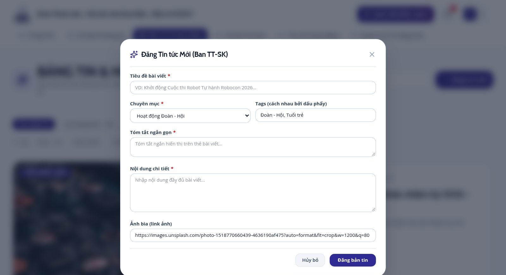
Form đăng tin tức
Trang tin hiển thị 10 bài mới nhất, bài cũ hơn nằm sau nút "Xem thêm tin cũ hơn".
6. Tra cứu hoạt động của sinh viên
Mọi vai trò cán bộ
Vào mục Tra cứu Hoạt động, nhập MSSV → Tra cứu ngay để xem số sự kiện đã đăng ký, đã điểm danh, tỷ lệ chuyên cần và các vé của sinh viên đó. Sinh viên thường chỉ xem được vé của chính mình.
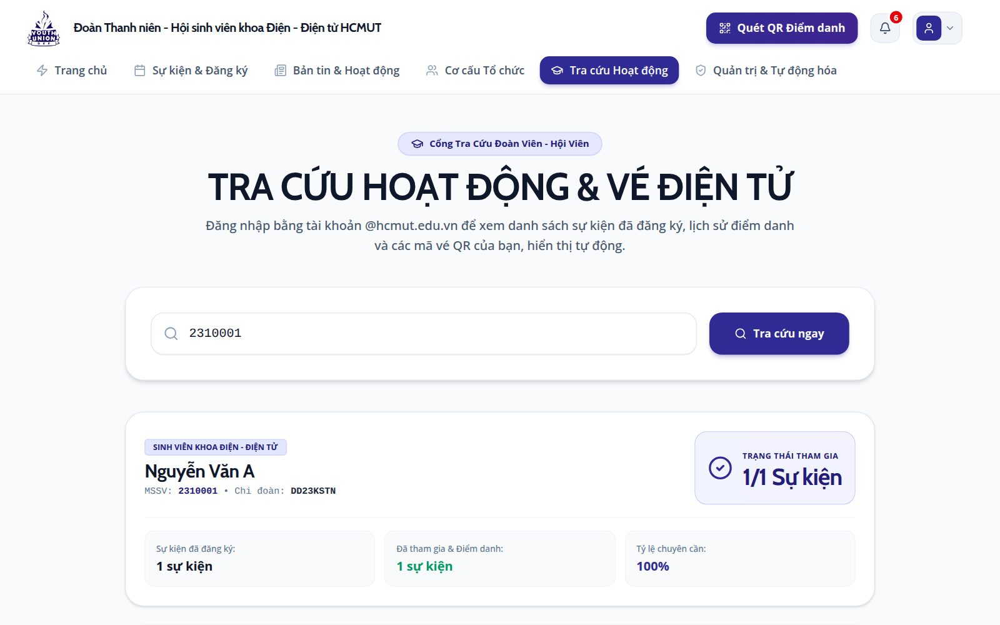
Cán bộ tra cứu theo MSSV
7. BCH, Đội CTV và danh sách sinh viên
Super Admin · Ban QLNS-CTSV
BCH & Trưởng, phó ban Đội CTV (trang Cơ cấu Tổ chức)
Tab BCH & Trưởng, phó ban CTV: Thêm người, sửa (bút), xoá (thùng rác), Xuất Excel, lọc theo Đoàn / Hội / Đội CTV.
Mỗi người có tổ chức, họ tên, chức vụ, cấp bậc (Bí thư, Phó Bí thư, Ủy viên BTV, Trưởng ban, Phó ban, Ủy viên), ban, email, ảnh đại diện (Tải ảnh lên), giới thiệu.
Trang công khai tự sắp xếp: Bí thư ở giữa, Phó Bí thư căn giữa, Ủy viên thẻ nhỏ; ở Đội CTV, Trưởng ban nằm trên Phó ban của từng ban.
Nếu dùng Google Sheet BCH: sửa trong Sheet, script tự đồng bộ lên web; ảnh đại diện vẫn sửa trên web.
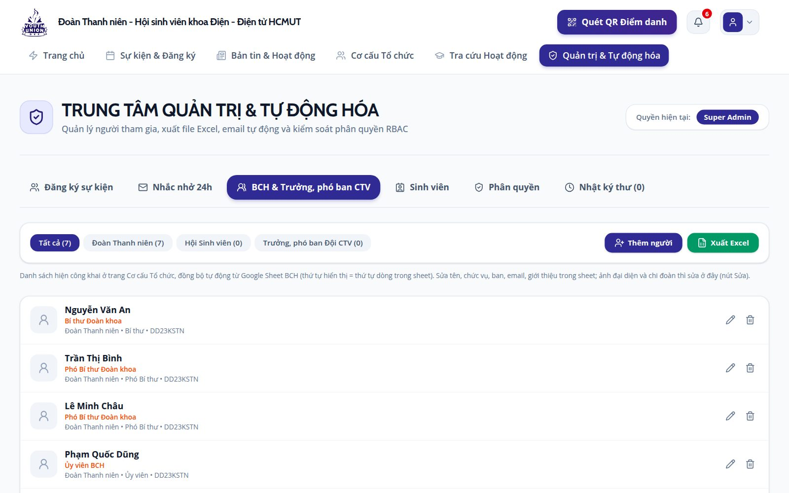
Tab BCH & Trưởng, phó ban CTV
Danh sách sinh viên / Đoàn viên / Hội viên
Tab Sinh viên: danh sách chia theo khóa, trong mỗi khóa chia theo lớp (chưa có lớp thì xếp vào "Chưa rõ"). Có ô tìm kiếm, lọc Đoàn viên / Hội viên / trạng thái / khóa, Thêm sinh viên, Xuất Excel.
Nguồn dữ liệu chính là Google Sheet sinh viên; thêm / sửa / xoá trên web được ghi vào cả Sheet lẫn hệ thống. Thêm sinh viên cần có tab cùng tên khóa trong Sheet (ví dụ K24).
Sinh viên tự liên kết tài khoản @hcmut.edu.vn và bổ sung hồ sơ ở lần đăng nhập đầu. Liên kết nhầm: mở Sửa sinh viên đó → bấm Gỡ liên kết → Lưu thay đổi.
Sinh viên báo "MSSV chưa có trong danh sách" → thêm MSSV và họ tên vào Sheet (hoặc nút Thêm sinh viên) rồi nhờ sinh viên thử lại.
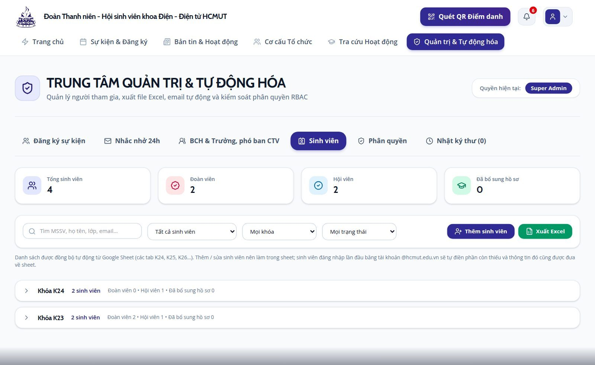
Tab Sinh viên
8. Phân quyền tài khoản
Super Admin
Tab Phân quyền → nhập email @hcmut.edu.vn của cán bộ, chọn vai trò → Cấp quyền.
Đổi vai trò: chọn vai trò mới ở dòng của tài khoản. Thu hồi: bấm thùng rác.
Super Admin không tự đổi hay thu hồi quyền của chính mình (tránh khoá mất tài khoản quản trị cuối cùng).
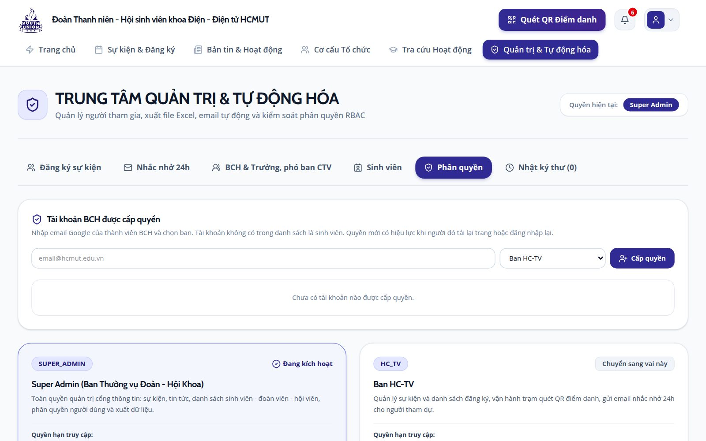
Tab Phân quyền
Hết nhiệm kỳ hoặc cán bộ nghỉ: thu hồi quyền ngay. Mỗi vai trò chỉ cấp cho người thật sự cần.
9. Lưu ý bảo mật và hạn mức miễn phí
Không chia sẻ tài khoản; đăng xuất khi dùng máy tính chung. Bật xác minh 2 bước cho tài khoản Google.
File Excel xuất ra chứa email, số điện thoại của sinh viên: chỉ lưu ở nơi an toàn, không đăng lên nhóm công khai.
Hệ thống chạy trên gói Firebase miễn phí (giới hạn lượt đọc mỗi ngày). Tránh tải lại liên tục và tránh chọn "Tất cả sự kiện" khi không cần. Dữ liệu công khai có thể chậm cập nhật tối đa khoảng 3 phút trên máy người khác.
Quy định chi tiết về dữ liệu cá nhân: deeyu-hcmut.github.io/privacy.html.
10. Xử lý sự cố thường gặp
Hiện tượng
Cách xử lý
Đăng nhập xong bị đẩy ra, báo chỉ nhận @hcmut.edu.vn
Đăng nhập lại bằng email trường, không dùng Gmail cá nhân.
Không thấy mục Quản trị / nút Quét QR
Tài khoản chưa được cấp quyền: nhờ Super Admin cấp ở tab Phân quyền, rồi tải lại trang.
Sinh viên không đăng ký được
Sinh viên chưa liên kết hồ sơ, hoặc MSSV chưa có trong danh sách sinh viên của khoa (xem mục 7). Kiểm tra sự kiện còn mở đăng ký và còn chỗ.
Sinh viên không nhận được email
Xem tab Nhật ký thư: Đang chờ thì đợi tối đa 5–10 phút; Lỗi là địa chỉ email sai; Đã gửi thì nhờ kiểm tra thư rác.
Camera không quét được QR
Cho phép camera trong trình duyệt, tăng độ sáng màn hình vé, hoặc nhập mã vé / MSSV bằng tay.
Vừa tạo sự kiện nhưng máy khác chưa thấy
Dữ liệu được lưu tạm trên trình duyệt tối đa khoảng 3 phút, đợi rồi tải lại trang.
Web báo lỗi tải dữ liệu hoặc hiện dữ liệu cũ cả ngày
Có thể đã hết hạn mức đọc miễn phí trong ngày; hệ thống tự phục hồi sau nửa đêm (giờ Thái Bình Dương). Báo Super Admin nếu lặp lại.
Liên hệ hỗ trợ kỹ thuật: dtn-ddt@hcmut.edu.vn · Fanpage dee.yu.hcmut